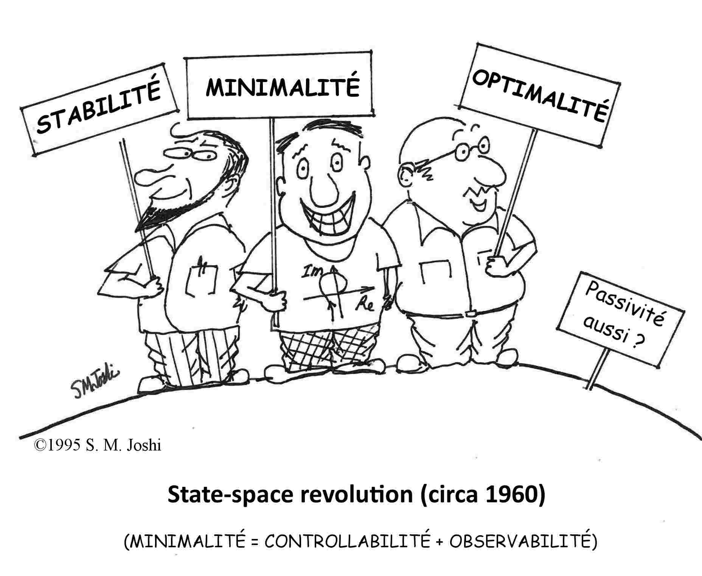

|
Teoria dei Sistemi 2020/21 — LM Ingegneria Meccatronica • Univ. Padova
Informazioni generali
|
 |
Descrizione:
Il corso si propone di fornire strumenti e tecniche avanzate per l’analisi e il controllo di sistemi dinamici.
Ci concentreremo sull'approccio in spazio di stato e considereremo, per la gran parte del corso, sistemi lineari e tempo invarianti a tempo continuo e discreto.
Analizzeremo prima le proprietà fondamentali di questi sistemi (soluzioni, stabilità, raggiungibilità, osservabilità, etc.) per poi studiare tecniche di controllo in retroazione.
A partire da quest'anno accademico, il corso prevederà una parte di programmazione in MATLAB®.
[Image credits: http://controlcartoons.com]
📌 Informazioni e programma indicativo
📌 Pagina offerta formativa UniPD
📌 Pagina moodle DTG ➡︎ Iscrizione obbligatoria!
|
News:
📣 11/04/21: L'ultima lezione del corso si terrà venerdì 16 aprile (invece di giovedì 15 aprile).
📣 08/04/21: L'orario di inizio del compitino del 23/04/2021 è stato posticipato alle ore 14:30.
Ricevimento:
🚪 Su Zoom, dopo lezione o tramite appuntamento e-mail (usare sigla [TDS 2021] all'inizio dell'oggetto e-mail!)
Orario lezioni:
Lunedì 13:00-15:00, Zoom
Mercoledì 14:30-16:30, Zoom
Giovedì 10:45-12:45, Zoom
Venerdì 10:45-12:45, Zoom
🔗 I link Zoom per partecipare alle lezioni saranno resi disponibili nella pagina moodle del corso.
🗓 Per un calendario sempre aggiornato delle lezioni ed esami dell'intero corso integrato (Modulo A+B) si faccia riferimento al Google calendar del corso.
Testo di riferimento:
📕 M. Bisiacco, S. Braghetto. “Teoria dei sistemi dinamici”. Società Editrice Esculapio, 2 Ed., 2010.
Testi per consultazione:
📗 E. Fornasini. “Appunti di teoria dei sistemi”. Ed. Libreria Progetto Padova, 2013.
📘 E. Fornasini, G. Marchesini. “Esercizi di teoria dei sistemi”. Ed. Libreria Progetto Padova, 1997.
📙 J. P. Hespanha. “Linear systems theory”. Princeton University Press, 2018.
Calendario esami:
Materiale in preparazione all'esame:
📝 Esercizi e temi d'esame risolti degli anni scorsi sono disponibili alla pagina web del corso dell'A.A. 2019/20 e alla pagina web del Prof. Zampieri.
FAQs:
Come è strutturato l'esame?
L'esame del modulo A (Teoria dei Sistemi) è composto da una prova scritta (punteggio max 12 punti) ed una prova orale (punteggio max 5 punti). La prova scritta consiste di 3 esercizi e ha durata 2 ore. La prova orale si tiene in concomitanza con la prova orale del modulo B (Controllo Ottimo e Adattativo). Si accede alla prova orale con un punteggio di almeno 7/12 nella prova scritta. Sia il modulo A che il modulo B hanno una votazione massima di 17 punti. Il voto finale del corso integrato (modulo A+modulo B) è dato dalla somma dei voti dei due moduli (arrotondata per eccesso in caso di mezzo voto). Un voto finale \(\geq\) 31 corrisponde a 30 e lode.
Quanto a lungo rimane valido il voto dell'esame?
A partire da quest'anno accademico, il voto della prova scritta o scritta+orale del modulo A ha validità di un anno solare.
Ho superato la prova scritta con un voto che non mi soddisfa, posso rifare l'esame?
Certamente sì. In caso di consegna del compito, il voto del precedente esame verrà annullato. In caso di ritiro, il voto del precedente esame rimarrà valido.
Posso far riferimento al materiale didattico (slides ed esercizi) usato nell'A.A. 2019-20?
Anche se il programma del modulo A rimane pressoché invariato rispetto a quello dell'A.A. 2019-20, ci saranno dei cambiamenti/aggiornamenti di alcune parti del materiale didattico. Il nuovo materiale didattico (slides ed esercizi) relativo ad un argomento verrà reso disponibile in questa pagina web ed in moodle qualche giorno prima delle lezioni in oggetto. Si consiglia fortemente di utilizzare il materiale didattico aggiornato di quest'anno.
Ho seguito il corso nell'A.A. 2019-20 (o precedente), posso sostenere l'esame?
Il programma del corso del modulo A di quest'anno rimane pressoché invariato rispetto a quello degli anni precedenti (a meno di piccole variazioni). Può quindi sostenere l'esame secondo le modalità di questo anno accademico.
Ho già superato l'esame del modulo B nell'A.A. 2019-20 (o precedente), come verrà calcolato il mio voto finale del corso integrato?
Il voto dell'esame (scritto+orale) del modulo A verrà convertito in trentesimi e verrà fatta la media (arrotondata per eccesso in caso di mezzo voto) con il voto (già in trentesimi) conseguito nel modulo B.
Ho già superato l'esame del modulo A nell'A.A. 2019-20 (o precedente), come verrà calcolato il mio voto finale del corso integrato?
Il voto dell'esame (scritto+orale) del modulo B verrà convertito in trentesimi e verrà fatta la media (arrotondata per eccesso in caso di mezzo voto) con il voto (già in trentesimi) conseguito nel modulo A.
Non ho MATLAB installato nel mio computer, come faccio?
L'Università di Padova mette a disposizione dei suoi studenti una licenza gratuita per l'installazione e utilizzo di MATLAB. Si faccia riferimento a questa pagina per ulteriori informazioni. In alternativa, è possibile utilizzare MATLAB attraverso una macchina virtuale (quindi senza doverlo installare nel proprio computer) grazie al Progetto Taliercio 2020 dell'Università di Padova (contattare la segreteria didattica per maggiori informazioni).
Le esercitazioni MATLAB sono facoltative?
No, le esercitazioni MATLAB sono a tutti gli effetti ore di lezione e sono quindi parte integrante del corso. Anche se non entreranno a far parte del programma d'esame, queste esercitazioni sono utili per almeno due motivi: (i) servono a meglio comprendere e vedere “in azione” alcuni argomenti teorici del corso, (ii) sono essenziali per affrontare con successo i successivi laboratori del modulo B del corso integrato.
Lezioni e materiale didattico
| lezione | contenuti | slides | slides annotate | testo | esercizi | extra |
| 01/03/21 | Introduzione al corso,
concetto di sistema dinamico | Lezione 1 | – | – | – | Breve video
sull'ingegneria del controllo |
| 03/03/21 | Classificazione di sistemi,
rappresentazione in spazio di stato | Lezione 2
Lezione 2 (2x2)
Lezione 2 (2x1+N) | Lezione 2
Lezione 2 (solo note) | § 1.1, 1.2 | Esercizi | – |
| 04/03/21 | Esempi di sistemi in spazio di stato,
esponenziale di matrice | Lezione 3
Lezione 3 (2x2)
Lezione 3 (2x1+N) | Lezione 3
Lezione 3 (solo note) | § 1.3, 1.4 | Esercizi | – |
|
05/03/21 | MATLAB®: Introduzione | -- | -- | -- | -- | Vedere pagina moodle
per il materiale |
| 08/03/21 | Richiami di algebra lineare, forma di Jordan,
calcolo dell'esponenziale di matrice | Lezione 5
Lezione 5 (2x2)
Lezione 5 (2x1+N) | Lezione 5
Lezione 5 (solo note) | § 1.5, 1.6 | Esercizi | – |
| 10/03/21 | Modi elementari, evoluzione libera e
forzata a tempo continuo | Lezione 6
Lezione 6 (2x2)
Lezione 6 (2x1+N) | Lezione 6
Lezione 6 (solo note) | § 1.7, 1.8, 3.1 | Esercizi | – |
| 11/03/21 | Modi elementari, evoluzione libera e
forzata a tempo discreto | Lezione 7
Lezione 7 (2x2)
Lezione 7 (2x1+N) | Lezione 7
Lezione 7 (solo note) | § 3.1, 3.5-3.7 | Esercizi | – |
| 12/03/21 | Esercizi di ricapitolazione sulla parte I | Lezione 8
Lezione 8 (2x2)
Lezione 8 (2x1+N) | Lezione 8
Lezione 8 (solo note) | – | – | – |
| 15/03/21 | Equilibri, definizioni di
stabilità, linearizzazione | Lezione 9
Lezione 9 (2x2)
Lezione 9 (2x1+N) | Lezione 9
Lezione 9 (solo note) | § 2.1, 2.2, 2.5
§ 3.2 | Esercizi | – |
| 17/03/21 | Teorema di linearizzazione,
funzioni e teorema di Lyapunov | Lezione 10
Lezione 10 (2x2)
Lezione 10 (2x1+N) | Lezione 10
Lezione 10 (solo note) | § 2.3, 2.6 | Esercizi | Ritratto di fase pendolo |
| 18/03/21 | Criterio di Krasowskii | Lezione 11
Lezione 11 (2x2)
Lezione 11 (2x1+N) | Lezione 11
Lezione 11 (solo note) | § 2.7 | Esercizi | – |
| 19/03/21 | Esercizi di ricapitolazione sulla parte II | Lezione 12
Lezione 12 (2x2)
Lezione 12 (2x1+N) | Lezione 12
Lezione 12 (solo note) | – | – | – |
| 24/03/21 | Raggiungibilità a tempo discreto,
ingresso a energia minima | Lezione 13
Lezione 13 (2x2)
Lezione 13 (2x1+N) | Lezione 13
Lezione 13 (solo note) | § 4.1, 4.2 | Esercizi | – |
| 25/03/21 | Forma canonica di raggiungibilità, test PBH,
controllabilità a tempo discreto | Lezione 14
Lezione 14 (2x2)
Lezione 14 (2x1+N) | Lezione 14
Lezione 14 (solo note) | § 4.3, 4.4, 4.5 | Esercizi | – |
| 26/03/21 | Raggiungibilità e controllabilità a tempo continuo | Lezione 15
Lezione 15 (2x2)
Lezione 15 (2x1+N) | Lezione 15
Lezione 15 (solo note) | § 4.6 | Esercizi | – |
| 29/03/21 | Introduzione al problema di controllo,
esempi di controllo in retroazione dallo stato/uscita | Lezione 16
Lezione 16 (2x2)
Lezione 16 (2x1+N) | Lezione 16
Lezione 16 (solo note) | – | – | – |
| 31/03/21 | Retroazione dallo stato con uno o più ingressi,
stabilizzabilità | Lezione 17
Lezione 17 (2x2)
Lezione 17 (2x1+N) | Lezione 17
Lezione 17 (solo note) | § 5.1, 5.2, 5.3 | Esercizi | – |
| 01/04/21 | Esercizi di ricapitolazione su raggiungibilità,
controllabilità e retroazione dallo stato | Lezione 18
Lezione 18 (2x2)
Lezione 18 (2x1+N) | Lezione 18
Lezione 18 (solo note) | – | – | – |
| 07/04/21 | Osservabilità e ricostruibilità a tempo discreto e continuo | Lezione 19
Lezione 19 (2x2)
Lezione 19 (2x1+N) | Lezione 19
Lezione 19 (solo note) | § 6.3, 6.4 | Esercizi | – |
| 08/04/21 | Dualità, stimatori dello stato, rivelabilità | Lezione 20
Lezione 20 (2x2)
Lezione 20 (2x1+N) | Lezione 20
Lezione 20 (solo note) | § 6.1, 6.2,
6.5, 6.6 | Esercizi | – |
| 09/04/21 | Sintesi del regolatore | Lezione 21
Lezione 21 (2x2)
Lezione 21 (2x1+N) | Lezione 21
Lezione 21 (solo note) | § 7.1 | Esercizi | – |
| 12/04/21 | Esercizi di ricapitolazione su osservabilità,
stimatori e regolatori | Lezione 22
Lezione 22 (2x2)
Lezione 22 (2x1+N) | Lezione 22
Lezione 22 (solo note) | – | – | – |
| 14/04/21 | Esercizi in preparazione all'esame | Lezione 23
Lezione 23 (2x2)
Lezione 23 (2x1+N) | – | – | – | – |
|
16/04/21 | MATLAB®: Controllo di un segway | -- | -- | -- | -- | --
|
- Parte I: Modelli di sistemi
- Parte II: Stabilità di sistemi
- Parte III: Analisi e controllo di sistemi lineari
- Esercizi
- MATLAB®
|